<!doctype html>
<html lang="en">

	<head>
		<meta charset="utf-8">

		<title>Elektronische installatietechnieken - Les 2 Beveiliging</title>

		<meta name="description" content="Elektronische installatietechnieken - Les 2 Beveiliging">
		<meta name="author" content="Steven Charpentier">

		<meta name="apple-mobile-web-app-capable" content="no">
		<meta name="apple-mobile-web-app-status-bar-style" content="black-translucent">

		<meta name="viewport" content="width=device-width, initial-scale=1.0">

		<link rel="stylesheet" href="dist/reset.css">
		<link rel="stylesheet" href="dist/reveal.css">
		<link rel="stylesheet" href="dist/theme/dracula.css" id="theme">
		<link rel="stylesheet" href="APstyle.css">

		<!-- Theme used for syntax highlighting of code -->
		<link rel="stylesheet" href="plugin/highlight/monokai.css">

		<script src="https://cdn.jsdelivr.net/npm/mermaid@11/dist/mermaid.min.js"></script>
	</head>

	<body>

		<div class="reveal">
            <div class="slides">
    <section data-markdown>
  <script type="text/template">
### Beveiliging
## Netstelsels, gevaren van stroom en zekeringen

---

## Wat proberen we te vermijden?

Wat gebeurt er als de isolatie van een toestel defect raakt en de behuizing onder spanning komt te staan?

Alles wat volgt is het antwoord op die ene vraag: hoe zorgen we dat zo'n fout geen slachtoffers maakt en geen brand veroorzaakt?

---

## De gevaren van stroom door het lichaam

- Hoe gevaarlijk een schok is, hangt af van de **stroomsterkte** en de **blootstellingstijd**
- IEC 60479-1 verdeelt dit in vier zones, van "geen reactie" tot "levensgevaarlijk"
- Eén punt is goed onderzocht met een verschil tussen man en vrouw: de **loslaatgrens**

---

## Loslaatgrens
### Man vs vrouw

| Grens | Vrouw | Man |
|---|---|---|
| 99,5% kan nog loslaten | 6 mA | 9 mA |
| Gemiddelde loslaatgrens | ≈ 10,5 mA | ≈ 16 mA |
| Bovengrens loslaatgrens | ≈ 15 mA | ≈ 23 mA |

Vrouwen lopen gemiddeld al bij een lagere stroom het risico niet meer zelf te kunnen loslaten

---

## Van tinteling tot levensgevaar

| Stroom | Effect |
|---|---|
| < 0,5 mA | Meestal geen reactie |
| 0,5 - 5 mA | Voelbare tinteling, geen schade |
| 6 - 23 mA | Loslaatgrens (zie vorige slide) |
| 20 - 30 mA | Ademhalingsmoeilijkheden |
| **> 30 mA** | **Dodelijke afloop reëel mogelijk** |
| 50 - 100+ mA | Sterk stijgend risico op kamerfibrilleren |
| > 200 mA | Zware verbranding, hartstilstand |

---

## Effect van stroomsterkte
### Reëel voorbeeld

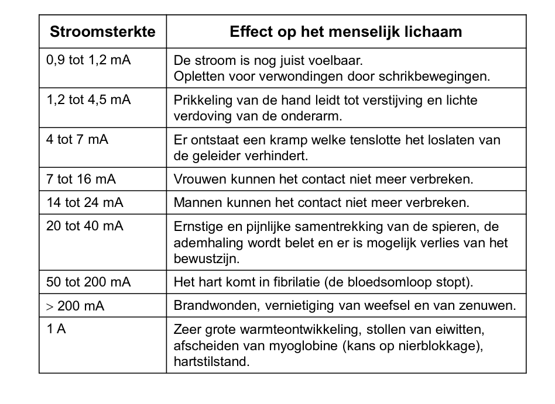

---

## Waarom net 30 mA?

- Vanaf **30 mA** wordt een dodelijke afloop bij een stroom van hand naar voet reëel
- Daarom staat de wettelijke bijkomende bescherming exact op maximaal **30 mA**
- Dat is ruim onder de gevarengrens, met marge

---

## Netstelsels
### Hoe is de aarding opgezet?

**Eerste letter** = hoe is de bron geaard
**Tweede letter** = hoe zijn de massa's geaard

- **T**: rechtstreeks geaard
- **N**: verbonden met de nulleider (die bij de bron geaard is)
- **I**: geïsoleerd van de aarde, of via hoge impedantie

---

## Twee soorten fouten


- **Aardfout** (rood): een fase raakt de massa van een toestel, foutstroom zoekt de weg terug naar de bron
- **Kortsluiting tussen 2 fasen, 380V** (paars): heeft niets met de aarding te maken, gebeurt overal hetzelfde

---

## Kleurcode
### Wat is écht verplicht?

- **N**: blauw is **verplicht**, indien de kring een nulgeleider heeft
- **PE/PEN**: groen-geel is **verplicht**
- **L1, L2, L3**: het AREI legt **geen** kleur per fase op

---

## Kleurcode
### Gebruikt in deze diagrammen

- **L1** - bruin (conventie, niet verplicht)
- **L2** - zwart (conventie, niet verplicht)
- **L3** - grijs (conventie, niet verplicht)
- **N** - blauw
- **PE / PEN** - groen (werkelijk groen-geel)
- **Aardfout** - rood
- **Kortsluiting 380V (L1-L2)** - paars
- **Eerste fout in IT-net** - oranje

---

## TN-S

Nulleider (N) en aardgeleider (PE) lopen **volledig gescheiden**, van bron tot toestel

<div class="mermaid">
graph LR
    Bron["Transfo - sterpunt geaard"] -->|L1| Bord["Verdeelbord"]
    Bron -->|L2| Bord
    Bron -->|L3| Bord
    Bron -->|N apart| Bord
    Bron -->|PE apart| Bord
    Bron --- AardeBron(("Aarde bij de bron"))
    Bord -->|L1| Stopcontact["Stopcontact"]
    Bord -->|N| Stopcontact
    Bord -->|L1| Massa["Massa toestel"]
    Bord -->|PE| Massa
    Bord -.->|L1 - kortsluitstroom 380V| Kortsluiting["Kortsluiting L1-L2"]
    Kortsluiting -.->|L2 - kortsluitstroom terug| Bord
    Massa -.->|Aardfout - via PE| Bord
    Bord -.->|Aardfout - terug naar bron| Bron
    linkStyle 0,6,8 stroke:#b5651d,stroke-width:2px
    linkStyle 1 stroke:#333333,stroke-width:2px
    linkStyle 2 stroke:#999999,stroke-width:2px
    linkStyle 3,7 stroke:#4a90e2,stroke-width:2px
    linkStyle 4,9 stroke:#21A155,stroke-width:2px
    linkStyle 10,11 stroke:#8E24AA,stroke-width:3px
    linkStyle 12,13 stroke:#C40009,stroke-width:3px
</div>

---

## TN-S
### Reële voorbeelden

<div style="display:flex;justify-content:center;gap:15px;flex-wrap:wrap">
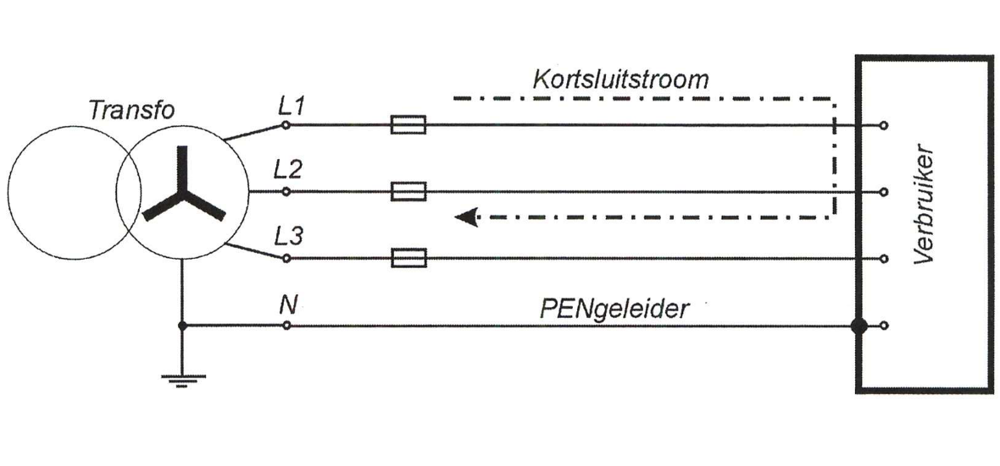
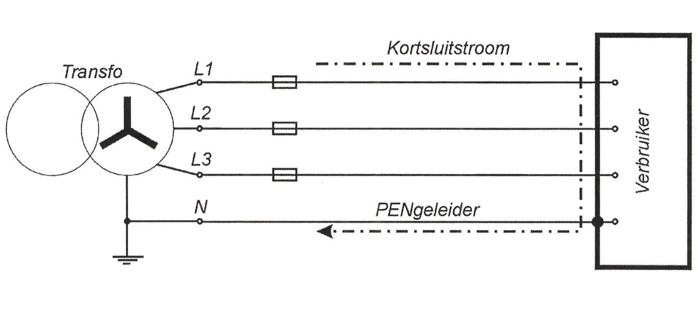
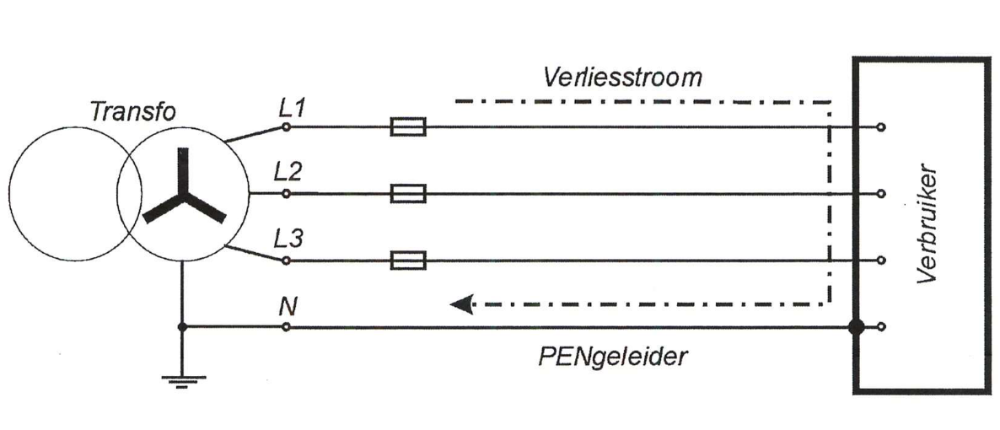
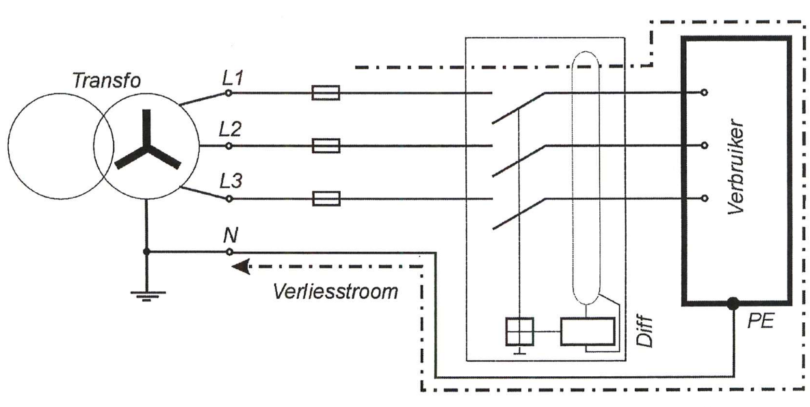
</div>

---

## TN-S
### Waar gebruikt?

- In België: verder in een **privaat net** (eigen transfocabine), na de splitsing van TN-C-S
- Dus industriële/tertiaire gebouwen, niet gewone woningen op het openbare net
- Aangeraden bij gevoelige elektronica: datacenters, gebouwen met veel IT-apparatuur

---

## TN-C

N en PE zijn **één gecombineerde geleider** (PEN), over het volledige traject

<div class="mermaid">
graph LR
    Bron["Transfo - sterpunt geaard"] -->|L1| Bord["Verdeelbord"]
    Bron -->|L2| Bord
    Bron -->|L3| Bord
    Bron -->|PEN gecombineerd| Bord
    Bron --- AardeBron(("Aarde bij de bron"))
    Bord -->|L1| Belasting["Stopcontact + massa toestel"]
    Bord -->|PEN| Belasting
    Bord -.->|L1 - kortsluitstroom 380V| Kortsluiting["Kortsluiting L1-L2"]
    Kortsluiting -.->|L2 - kortsluitstroom terug| Bord
    Belasting -.->|Aardfout - via PEN| Bron
    linkStyle 0,5 stroke:#b5651d,stroke-width:2px
    linkStyle 1 stroke:#333333,stroke-width:2px
    linkStyle 2 stroke:#999999,stroke-width:2px
    linkStyle 3,6 stroke:#21A155,stroke-width:2px
    linkStyle 7,8 stroke:#8E24AA,stroke-width:3px
    linkStyle 9 stroke:#C40009,stroke-width:3px
</div>

---

## TN-C
### Reële voorbeelden

<div style="display:flex;justify-content:center;gap:15px">
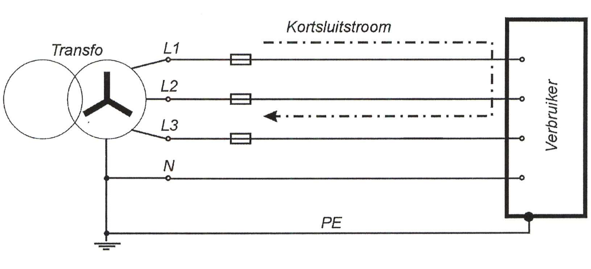
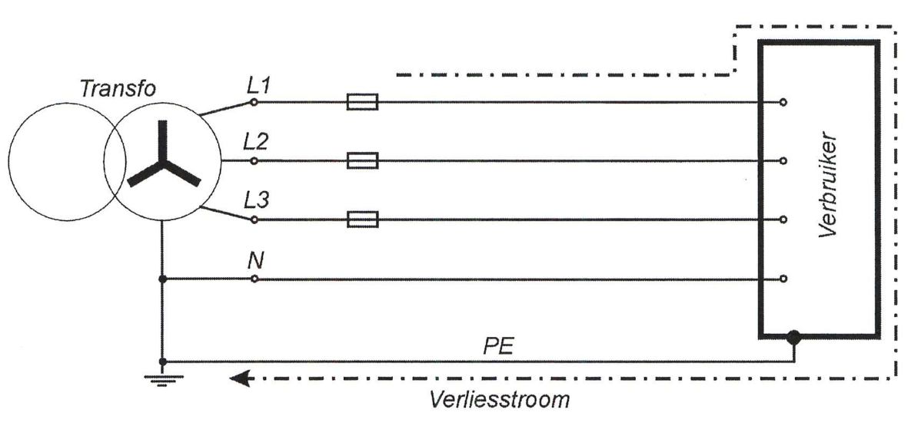
</div>

---

## TN-C
### Waar gebruikt?

- Het openbare laagspanningsdistributienet zelf (bv. Fluvius, ORES) tussen trafo en straat
- Straatverlichting
- **Verboden** in de eindkringen van een gebouw na de teller

---

## TN-C-S

**Gecombineerd (PEN) tot een splitsingspunt**, daarna **gescheiden** N en PE

<div class="mermaid">
graph LR
    Bron["Transfo - sterpunt geaard"] -->|L1| Splits["Splitsingspunt"]
    Bron -->|L2| Splits
    Bron -->|L3| Splits
    Bron -->|PEN gecombineerd| Splits
    Bron --- AardeBron(("Aarde bij de bron"))
    Splits -->|L1| Bord["Verdeelbord"]
    Splits -->|L2| Bord
    Splits -->|L3| Bord
    Splits -->|N apart| Bord
    Splits -->|PE apart| Bord
    Bord -->|L1| Stopcontact["Stopcontact"]
    Bord -->|N| Stopcontact
    Bord -->|L1| Massa["Massa toestel"]
    Bord -->|PE| Massa
    Bord -.->|L1 - kortsluitstroom 380V| Kortsluiting["Kortsluiting L1-L2"]
    Kortsluiting -.->|L2 - kortsluitstroom terug| Bord
    Massa -.->|Aardfout| Bord
    Bord -.->|Aardfout| Splits
    Splits -.->|Aardfout via PEN| Bron
    linkStyle 0,5,10,12 stroke:#b5651d,stroke-width:2px
    linkStyle 1,6 stroke:#333333,stroke-width:2px
    linkStyle 2,7 stroke:#999999,stroke-width:2px
    linkStyle 3 stroke:#21A155,stroke-width:2px
    linkStyle 8,11 stroke:#4a90e2,stroke-width:2px
    linkStyle 9,13 stroke:#21A155,stroke-width:2px
    linkStyle 14,15 stroke:#8E24AA,stroke-width:3px
    linkStyle 16,17,18 stroke:#C40009,stroke-width:3px
</div>

---

## TN-C-S
### Overzicht van de volledige keten

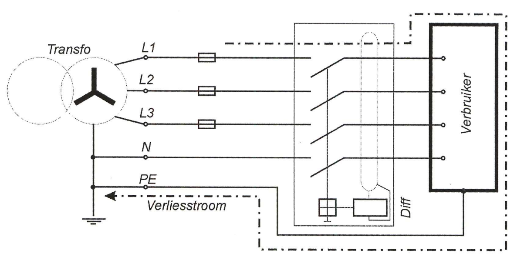

Van PEN aan de bron, over een splitsing, tot een aftakking met eigen differentieel

---

## TN-C-S
### Waar gebruikt?

- In België **niet** bij gewone woningen op het openbare net (die zijn TT, zie verder)
- Wel bij **private netten**: sites met een eigen transfocabine (industrie, tertiair)
- In NL/DE is TN-C-S wel de standaard tot bij de woning: verschilt per land

---

## TT

Massa's krijgen een **eigen, lokale aarde**, los van de aarding bij de bron

<div class="mermaid">
graph LR
    Bron["Transfo - sterpunt geaard"] -->|L1| Bord["Verdeelbord"]
    Bron -->|L2| Bord
    Bron -->|L3| Bord
    Bron -->|N| Bord
    Bron --- AardeBron(("Aarde bij de bron"))
    Bord -->|L1| Stopcontact["Stopcontact"]
    Bord -->|N| Stopcontact
    Bord -->|L1| Massa["Massa toestel"]
    Massa --- AardeInstallatie(("Eigen aarde bij de installatie"))
    Bord -.->|L1 - kortsluitstroom 380V| Kortsluiting["Kortsluiting L1-L2"]
    Kortsluiting -.->|L2 - kortsluitstroom terug| Bord
    Massa -.->|Aardfout| AardeInstallatie
    AardeInstallatie -.->|Via de grond - hoge impedantie| AardeBron
    AardeBron -.->|Aardfout| Bron
    linkStyle 0,5,7 stroke:#b5651d,stroke-width:2px
    linkStyle 1 stroke:#333333,stroke-width:2px
    linkStyle 2 stroke:#999999,stroke-width:2px
    linkStyle 3,6 stroke:#4a90e2,stroke-width:2px
    linkStyle 9,10 stroke:#8E24AA,stroke-width:3px
    linkStyle 11,12,13 stroke:#C40009,stroke-width:3px
</div>

Geen verbinding tussen massa's en aarde bij de bron: **een differentieelschakelaar is hier altijd noodzakelijk**

---

## TT
### Reëel voorbeeld: klantaarding

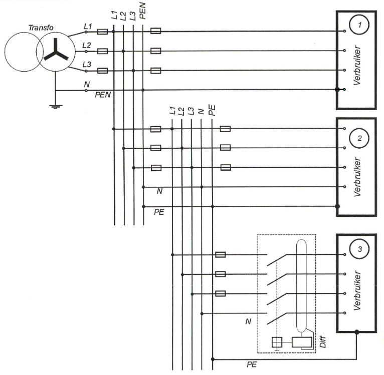

Verbruiker 2 (woning) krijgt een eigen "klantaarding", los van de PEN

---

## TT
### Waar gebruikt?

- **Het standaard netstelsel voor Belgische woningen** op het openbare net (Fluvius, Sibelga, ORES)
- Netbeheerder aardt zijn net, elke woning krijgt een eigen, onafhankelijke aardelektrode
- Geen uitzondering of iets van vroeger: dit is de normale situatie in België
- Daarom verplicht het AREI standaard 300 mA (+ 30 mA) differentieel

---

## IT

Sterpunt van de bron is **niet** rechtstreeks geaard, massa's hebben een eigen lokale aarde

<div class="mermaid">
graph LR
    Bron["Transfo - sterpunt geïsoleerd / hoge impedantie"] -.- Bewaker["Permanente isolatiebewaker"]
    Bron -->|L1| Bord["Verdeelbord"]
    Bron -->|L2| Bord
    Bron -->|L3| Bord
    Bord -->|L1| Stopcontact["Stopcontact"]
    Bord -->|L1| Massa["Massa toestel"]
    Massa --- AardeInstallatie(("Eigen aarde bij de installatie"))
    Bord -.->|L1 - kortsluitstroom 380V| Kortsluiting["Kortsluiting L1-L2"]
    Kortsluiting -.->|L2 - kortsluitstroom terug| Bord
    Massa -.->|Kleine lekstroom - 1e fout| AardeInstallatie
    AardeInstallatie -.->|Via de grond, hoge impedantie| Bron
    linkStyle 1,4,5 stroke:#b5651d,stroke-width:2px
    linkStyle 2 stroke:#333333,stroke-width:2px
    linkStyle 3 stroke:#999999,stroke-width:2px
    linkStyle 7,8 stroke:#8E24AA,stroke-width:3px
    linkStyle 9,10 stroke:#F59C00,stroke-width:3px
</div>

Pas bij een **tweede** fout ontstaat een echte, gevaarlijke foutstroomlus

---

## IT
### Reële voorbeelden

<div style="display:flex;justify-content:center;gap:15px">
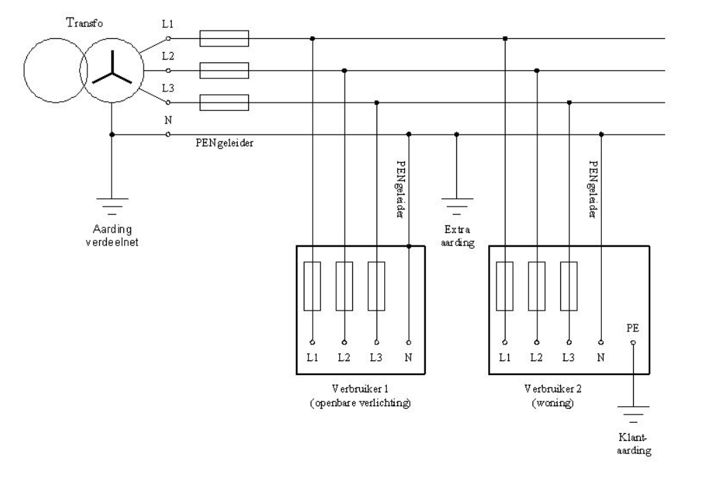
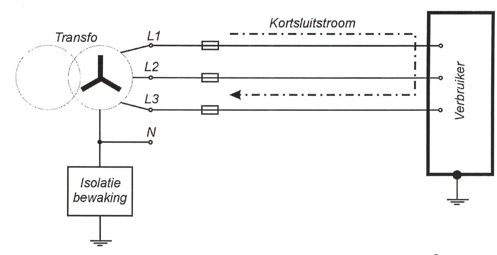
</div>

---

## IT
### Waar gebruikt?

- Operatiezalen en andere kritische ruimtes in ziekenhuizen
- Industriële processen met continue productie, bv. chemie
- Sommige scheeps- of offshore-installaties

---

## Waartegen beveiligen we?
### Stroom

- **Overbelasting**: te veel stroom, te lang -> oververhitting, brandgevaar
- **Kortsluiting**: zeer hoge stroom, zeer kort -> mechanische/thermische schade

---

## Waartegen beveiligen we?
### Aanraking en brand

- **Onrechtstreekse aanraking**: een massa staat onbedoeld onder spanning
- **Rechtstreekse aanraking**: rechtstreeks contact met een geleider onder spanning
- **Brand door lekstroom**: een aanhoudende lekstroom vanaf ongeveer 300 mA

---

## Hoe beveiligen
### Smeltveiligheden en automaten

- Beschermen tegen **overbelasting en kortsluiting**
- De toegelaten grootte hangt af van de kabeldikte
- **Tabel 4.11** van het AREI: bv. 2,5 mm² -> max. 16A smeltveiligheid of 20A automaat

---

## Uitschakelkarakteristiek van een automaat

<div style="display:flex;justify-content:center;gap:15px">
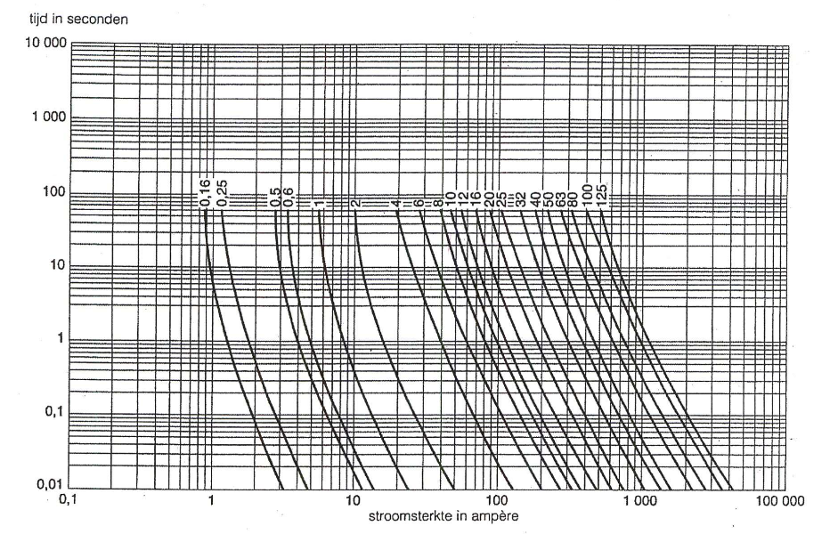
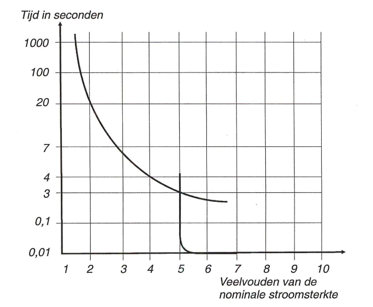
</div>

Hoe groter de overstroom, hoe sneller de uitschakeling

---

## Hoe beveiligen
### Aardlekschakelaars

- Beschermen tegen **onrechtstreekse (en deels rechtstreekse) aanraking**
- Vergelijken binnenkomende en buitengaande stroom, schakelen uit bij een verschil (lekstroom)
- **300 mA** algemeen, aan het begin van de installatie
- **30 mA** bijkomend voor stopcontacten en toestellen zoals wasmachines in de badkamer

---

## Differentieel bij de 2 soorten fouten

<div style="display:flex;justify-content:center;gap:15px">
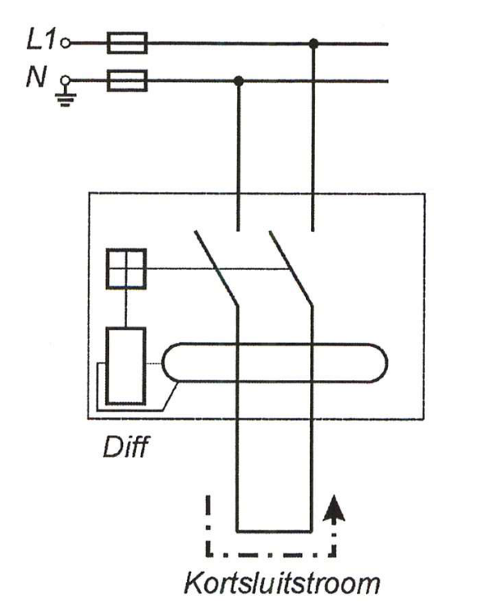
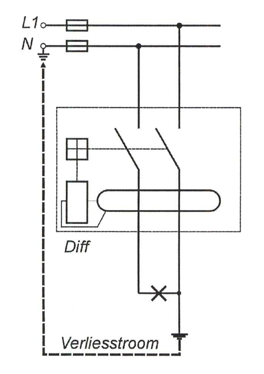
</div>

Kortsluitstroom: geen verschil in/uit, differentieel schakelt niet uit. Verliesstroom: wel verschil, differentieel schakelt uit

---

## Equipotentiaalverbinding in een badkamer

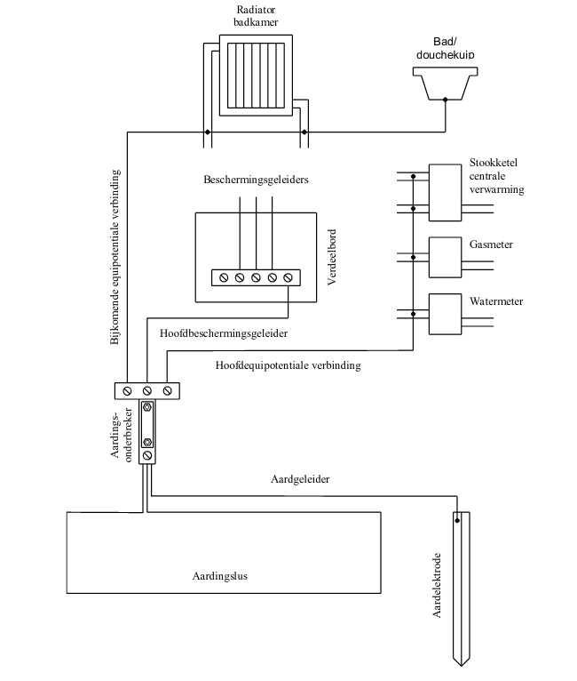

---

## Hoe sluit je dit op elkaar aan?

Van grof naar fijn, in de verdeelkast:

1. **Hoofdschakelaar**: volledige installatie aan/uit
2. **Algemene differentieel (300 mA)**: beschermt de volledige installatie
3. **Automaten per stroombaan**: op maat van de kabeldikte van die kring
4. **Bijkomende differentieel (30 mA)**: vóór stopcontacten en gevoelige toestellen

---

## Zo ziet dat eruit in een verdeelbord

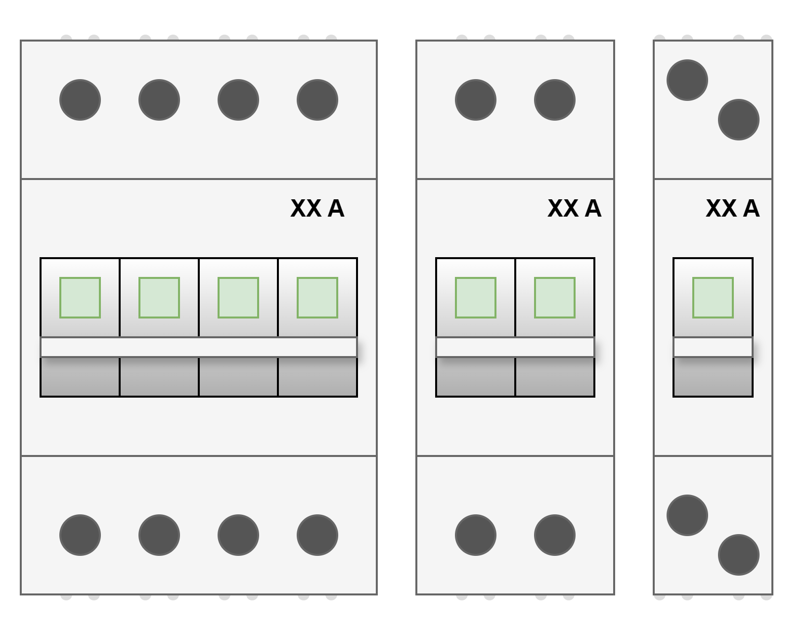


  </script>
</section>
</div></div>

		<script src="dist/reveal.js"></script>
		<script src="plugin/zoom/zoom.js"></script>
		<script src="plugin/notes/notes.js"></script>
		<script src="plugin/search/search.js"></script>
		<script src="plugin/markdown/markdown.js"></script>
		<script src="plugin/highlight/highlight.js"></script>
		<script>

			// Also available as an ES module, see:
			// https://revealjs.com/initialization/
			Reveal.initialize({
				controls: true,
				progress: true,
				center: true,
				hash: true,

				// Learn about plugins: https://revealjs.com/plugins/
				plugins: [ RevealZoom, RevealNotes, RevealSearch, RevealMarkdown, RevealHighlight ]
			}).then(() => {
				mermaid.initialize({ startOnLoad: false, theme: 'base', themeVariables: {
					primaryColor: '#F7F2F2',
					primaryBorderColor: '#97000C',
					primaryTextColor: '#231F20',
					lineColor: '#68676C',
					background: '#FFFFFF'
				} });
				mermaid.run({ querySelector: '.mermaid' }).then(() => Reveal.layout());
				Reveal.addEventListener('slidechanged', () => {
					mermaid.run({ querySelector: '.mermaid' }).then(() => Reveal.layout());
				});

				// Afbeeldingen laden asynchroon in. Reveal berekent de verticale
				// centrering ("center: true") op het moment van wisselen, dus vóór
				// een afbeelding klaar is met laden. Zonder herberekening blijft de
				// slide dan gecentreerd staan op de (kleinere) hoogte zonder afbeelding,
				// waardoor de afbeelding te laag lijkt te staan. Na elke load: opnieuw layouten.
				document.querySelectorAll('.reveal img').forEach((img) => {
					if (img.complete) return;
					img.addEventListener('load', () => Reveal.layout());
				});
			});

		</script>
</body>

</Html>
